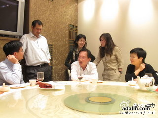

Developer Program转到新部门带来一个显著的好处是，可以作为一个长期的事情来规划，就和同一部门里的graduate program一样，大家知道做这些事情对公司对业务有好处，但需要两年，五年，甚至十年的时间来做，这事儿就必须得到高层的认同和支持。

Ada李力
2011-06-08

Ada李力
2011-06-08
晚上部门吃饭，两个桌子，只是大老板来给大家一一碰杯过一次。这样真好，我很烦一群人吃饭，个个都端个酒杯碰来碰去的。一起吃饭要要放松和轻松滴。轻松的另一面是很认真，几个人在很认真地讨论饭后去哪里吃甜品。
- 